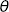

Tutorial¶
Introduction¶
Class vegas.Integrator gives Monte Carlo estimates of arbitrary multidimensional integrals using the vegas algorithm (G. P. Lepage, J. Comput. Phys. 27 (1978) 192). The algorithm has two components. First an automatic transformation is applied to to the integration variables in an attempt to flatten the integrand. Then a Monte Carlo estimate of the integral is made using the transformed variables. Flattening the integrand makes the integral easier and improves the estimate. The transformation applied to the integration variables is optimized over several iterations of the algorithm: information about the integrand that is collected during one iteration is used to improve the transformation used in the next iteration.
Monte Carlo integration makes few assumptions about the integrand — it needn’t be analytic nor even continuous. This makes Monte Carlo integation unusually robust. It also makes it well suited for adaptive integration. Adaptive strategies are essential for multidimensional integration, especially in high dimensions, because multidimensional space is large, with lots of corners.
Monte Carlo integration also provides efficient and reliable methods for estimating the accuracy of its results. In particular, each Monte Carlo estimate of an integral is a random number from a distribution whose mean is the correct value of the integral. This distribution is Gaussian or normal provided the number of integrand samples is sufficiently large. In practive one generates multiple estimates of the integral in order to verify that the distribution is indeed Gaussian. Error analysis is straightforward if the integral estimates are Gaussian.
The vegas algorithm has been in use for decades and implementations are available in may programming languages, including Fortran (the original version), C and C++. The algorithm used here is significantly improved over the original implementation, and that used in most other implementations. This module is written in Cython, so it is almost as fast as optimized Fortran or C, particularly when the integrand is also coded in Cython (or some other compiled language), as discussed below.
Basic Integrals¶
Here we illustrate vegas by estimating the integral

where constant is chosen so that the exact value is 1. The following code shows how this can be done:
import vegas
import math
def f(x):
dx2 = 0
for d in range(4):
dx2 += (x[d] - 0.5) ** 2
return math.exp(-dx2 * 100.) * 1013.2118364296088
integ = vegas.Integrator([[-1., 1.], [0., 1.], [0., 1.], [0., 1.]])
result = integ(f, nitn=10, neval=1000)
print(result.summary())
print('result = %s Q = %.2f' % (result, result.Q))
First we define the integrand f(x) where x specifies a point in the 4-dimensional space. We then create an integrator, integ, which is an integration operator that can be applied to any 4-dimensional function. It is where we specify the integration volume. Finally we apply integ to our integrand f(x), telling the integrator to estimate the integral using nitn=10 iterations of the vegas algorithm, each of which uses no more than neval=1000 evaluations of the integrand. Each iteration produces an independent estimate of the integral. The final estimate is the weighted average of the results from all 10 iterations, and is returned by integ(f ...). The call result.summary() returns a summary of results from each iteration.
This code produces the following output:
itn integral wgt average chi2/dof Q
-------------------------------------------------------
1 2.4(1.9) 2.4(1.9) 0.00 1.00
2 1.19(32) 1.23(32) 0.42 0.52
3 0.910(90) 0.934(87) 0.68 0.51
4 1.041(70) 0.999(55) 0.76 0.52
5 1.090(43) 1.055(34) 1.00 0.41
6 0.984(34) 1.020(24) 1.24 0.29
7 1.036(27) 1.027(18) 1.07 0.38
8 0.987(22) 1.011(14) 1.20 0.30
9 0.995(18) 1.005(11) 1.11 0.35
10 0.993(17) 1.0015(91) 1.02 0.42
result = 1.0015(91) Q = 0.42
There are several things worth noting here:
Adaptation: Integration estimates are shown for each of the 10 iterations, giving both the estimate from just that iteration, and the weighted average of results from all iterations up to that point. The estimates from the first two iterations are not accurate at all, with errors equal to 30–190% of the final result. vegas initially has no information about the integrand and so does a relatively poor job of estimating the integral. It uses information from the samples in one iteration, however, to remap the integration variables for subsequent iterations, concentrating samples where the function is largest and reducing errors. As a result, the per iteration error is reduced to 3.4% by the fifth iteration, and below 2% by the end — an improvement by almost two orders of magnitude from the start.
Weighted Average: The final result, 1.0015 ± 0.0091, is obtained from a weighted average of the separate results from each iteration. The individual estimates are statistical: each is a random number drawn from a distribution whose mean equals the correct value of the integral, and the errors quoted are estimates of the standard deviations of those distributions. The distributions are Gaussian provided the number of integrand evaluations per iteration (neval) is sufficiently large, in which case the standard deviation is a reliable estimate of the error. The weighted average
minimizes
where
are the estimates from individual iterations. If the
are Gaussian,
should be of order the number of degrees of freedom (plus or minus the square root of that number); here the number of degrees of freedom is the number of iterations minus 1.
The distributions are likely non-Gaussian, and error estimates unreliable, if
integ(f...) returns a weighted-average object, of type vegas.RunningWAvg, that has the following attributes:
result.mean — weighted average of all estimates of the integral;
result.sdev — standard deviation of the weighted average;
result.chi2 —
result.dof — number of degrees of freedom;
result.Q — Q or p-value of the weighted average’s
result.itn_results — list of the integral estimates from each iteration.
In this example the final Q is 0.42, indicating that the
Precision: The precision of vegas estimates is determined by nitn, the number of iterations of the vegas algorithm, and by neval, the maximum number of integrand evaluation made per iteration. The computing cost is typically proportional to the product of nitn and neval. The number of integrand evaluations per iteration varies from iteration to iteration, here between 486 and 959. Typically vegas needs more integration points in early iterations, before it has fully adapted to the integrand.
We can increase precision by increasing either nitn or neval, but it is generally far better to increase neval. For example, adding the following lines to the code above
result = integ(f, nitn=100, neval=1000) print('larger nitn => %s Q = %.2f' % (result, result.Q)) result = integ(f, nitn=10, neval=1e4) print('larger neval => %s Q = %.2f' % (result, result.Q))generates the following results:
larger nitn => 0.9968(15) Q = 0.43 larger neval => 0.99978(67) Q = 0.42The total number of integrand evaluations, nitn * neval, is about the same in both cases, but increasing neval is more than twice as accurate as increasing nitn. Typically one wants to use no more than 10 or 20 iterations beyond the point where vegas has fully adapted. You want some number of iterations so that you can verify Gaussian behavior by checking the
It is also generally useful to compare two or more results from values of neval that differ by a significant factor (4–10, say). These should agree within errors. If they do not, it could be due to non-Gaussian artifacts caused by a small neval. vegas estimates have two sources of error. One is the statistical error, which is what is quoted by vegas. The other is a systematic error due to residual non-Gaussian effects. The systematic error vanishes like 1/neval and so becomes negligible compared with the statistical error as neval increases. The systematic error can bias the Monte Carlo estimate, however, if neval is insufficiently large. This usually results in a large
The possibility of systematic biases is another reason for increasing neval rather than nitn to obtain more precision. Making neval larger and larger is guaranteed to improve the Monte Carlo estimate, with the systematic error vanishing quickly. Making nitn larger and larger, on the other hand, is guaranteed eventually to give the wrong answer. This is because at some point the statistical error (which falls as sqrt(1/nitn)) will no longer mask the systematic error (which is affected by neval but not nitn). The systematic error for the integral above (with neval=1000) is about -0.00073(7), which is negligible compared to the statistical error unless nitn is of order 1500 or larger — so systematic errors aren’t a problem with nitn=10.
Early Iterations: Integral estimates from early iterations, before vegas has adapted, can be quite crude. With very peaky integrands, these are often far from the correct answer with highly unreliable error estimates. For example, the integral above becomes more difficult if we double the length of each side of the integration volume by redefining integ as:
integ = vegas.Integrator( [[-2., 2.], [0, 2.], [0, 2.], [0., 2.]], )The code above then gives:
itn integral wgt average chi2/dof Q ------------------------------------------------------- 1 0.013(13) 0.013(13) 0.00 1.00 2 0.018(11) 0.0159(82) 0.13 0.72 3 1.74(80) 0.0161(82) 2.36 0.09 4 0.83(20) 0.0174(82) 6.97 0.00 5 0.934(87) 0.0255(82) 32.60 0.00 6 0.905(53) 0.0463(81) 80.46 0.00 7 1.010(42) 0.0805(80) 150.57 0.00 8 0.964(30) 0.1385(77) 244.64 0.00 9 1.023(29) 0.1985(74) 326.07 0.00 10 0.987(22) 0.2777(70) 415.67 0.00 result = 0.2777(70) Q = 0.00vegas misses the peak completely in the first two iterations, giving estimates that are completely wrong (by 76 and 89 standard deviations!). Some of its samples hit the peak’s shoulders, so vegas is eventually able to find the peak (by iterations 5–6), but the integrand estimates are wildly non-Gaussian before that point. This results in a non-sensical final result, as indicated by the Q = 0.00.
It is common practice in using vegas to discard estimates from the first several iterations, before the algorithm has adapted, in order to avoid ruining the final result in this way. This is done by replacing the single call to integ(f...) in the original code with two calls:
# step 1 -- adapt to f; discard results integ(f, nitn=7, neval=1000) # step 2 -- integ has adapted to f; keep results result = integ(f, nitn=10, neval=1000) print(result.summary()) print('result = %s Q = %.2f' % (result, result.Q))The results from the second step are well adapted from the start, and the final result is good:
itn integral wgt average chi2/dof Q ------------------------------------------------------- 1 1.015(27) 1.015(27) 0.00 1.00 2 1.024(24) 1.020(18) 0.06 0.80 3 0.991(15) 1.003(12) 0.81 0.44 4 0.989(17) 0.9989(97) 0.70 0.55 5 1.002(16) 0.9998(83) 0.53 0.71 6 1.019(18) 1.0030(76) 0.60 0.70 7 1.016(16) 1.0053(69) 0.59 0.74 8 0.988(16) 1.0028(63) 0.63 0.73 9 0.978(15) 0.9990(58) 0.84 0.57 10 1.004(14) 0.9997(54) 0.75 0.66 result = 0.9997(54) Q = 0.66Other Integrands: Once integ has been trained on f(x), it can be usefully applied to other functions with similar structure. For example, adding the following at the end of the original code,
def g(x): return x[0] * f(x) result = integ(g, nitn=10, neval=1000)gives the following new output:
itn integral wgt average chi2/dof Q ------------------------------------------------------- 1 0.5089(72) 0.5089(72) 0.00 1.00 2 0.5001(70) 0.5044(50) 0.76 0.38 3 0.4955(66) 0.5011(40) 0.95 0.39 4 0.4960(68) 0.4998(35) 0.77 0.51 5 0.5128(79) 0.5019(32) 1.14 0.34 6 0.5038(69) 0.5022(29) 0.92 0.46 7 0.5025(71) 0.5023(27) 0.77 0.59 8 0.4885(72) 0.5006(25) 1.12 0.35 9 0.4933(65) 0.4997(23) 1.11 0.35 10 0.500(15) 0.4997(23) 0.99 0.44 result = 0.4997(23) Q = 0.44The grid is almost optimal for g(x) from the start because g(x) peaks in the same region as f(x). The exact value for this integral is 0.5.
Note that vegas.Integrators can be saved in files and reloaded later using Python’s pickle module: for example, pickle.dump(integ, openfile) saves integrator integ in file openfile, and integ = pickle.load(openfile) reloads it. The is useful for costly integrations that might need to be reanalyzed later since the integrator remembers the variable transformations made to minimize errors, and so need not be readapted to the integrand when used later.
Non-Rectangular Volumes: vegas can integrate over volumes of non-rectangular shape. For example, we can replace integrand f(x) above by the same Gaussian, but restricted to a 4-sphere of radius 0.2, centered on the Gaussian:
import vegas import math def f_sph(x): dx2 = 0 for d in range(4): dx2 += (x[d] - 0.5) ** 2 if dx2 < 0.2 ** 2: return math.exp(-dx2 * 100.) * 1115.3539360527281318 else: return 0.0 integ = vegas.Integrator([[-1., 1.], [0., 1.], [0., 1.], [0., 1.]]) integ(f_sph, nitn=10, neval=1000) # adapt the grid result = integ(f_sph, nitn=10, neval=1000) # estimate the integral print(result.summary()) print('result = %s Q = %.2f' % (result, result.Q))The normalization is adjusted to again make the exact integral equal 1. Integrating as before gives:
itn integral wgt average chi2/dof Q ------------------------------------------------------- 1 1.057(81) 1.057(81) 0.00 1.00 2 0.984(34) 0.995(31) 0.69 0.41 3 1.001(39) 0.997(24) 0.35 0.70 4 1.003(32) 0.999(19) 0.24 0.87 5 0.974(25) 0.990(15) 0.34 0.85 6 0.973(34) 0.987(14) 0.31 0.91 7 1.65(46) 0.987(14) 0.60 0.73 8 1.049(60) 0.991(14) 0.65 0.71 9 1.049(83) 0.992(13) 0.63 0.75 10 1.055(51) 0.996(13) 0.72 0.69 result = 0.996(13) Q = 0.69This result can be improved somewhat by slowing down vegas’s adaptation:
... integ(f_sph, nitn=10, neval=1000, alpha=0.1) result = integ(f_sph, nitn=10, neval=1000, alpha=0.1) ...Parameter alpha controls the speed with which vegas adapts, with smaller alphas giving slower adaptation. Here we reduce it to 0.1, from its default value of 0.5, and get the following output:
itn integral wgt average chi2/dof Q ------------------------------------------------------- 1 1.026(23) 1.026(23) 0.00 1.00 2 0.968(22) 0.995(16) 3.38 0.07 3 1.039(23) 1.009(13) 2.89 0.06 4 0.991(22) 1.004(11) 2.09 0.10 5 1.022(26) 1.007(10) 1.67 0.15 6 0.964(22) 0.9995(94) 1.96 0.08 7 0.992(19) 0.9980(84) 1.65 0.13 8 1.007(22) 0.9991(79) 1.44 0.19 9 1.002(22) 0.9995(74) 1.26 0.26 10 0.969(18) 0.9952(68) 1.38 0.19 result = 0.9952(68) Q = 0.19Notice how the errors fluctuate less from iteration to iteration with the smaller alpha. vegas finds and holds onto the edge of the actual integration volume (at radius 0.2) more effectively when it is less precipitous about adapting. This leads to better results in this case.
It is a good idea to make the actual integration volume as large a fraction as possible of the total volume used by vegas, so vegas doesn’t spend lots of effort on regions where the integrand is exactly 0. Also, it can be challenging for vegas to find the region of non-zero integrand in high dimensions: integrating f_sph(x) in 20 dimensions instead of 4, for example, would require neval=1e16 integrand evaluations per iteration to have any chance of finding the region of non-zero integrand, because the volume of the 20-dimensional sphere is a tiny fraction of the total integration volume.
Note, finally, that integration to infinity is also possible: map the relevant variable into a different variable of finite range. For example, an integral over
from 0 to infinity is easily reexpressed as an integral over  from 0 to
.

Faster Integrands¶
The computational cost of a realistic multidimensional integral comes mostly from the cost of evaluating the integrand at the Monte Carlo sample points. Integrands written in pure Python are probably fast enough for problems where neval=1e3 or neval=1e4 gives enough precision. Some problems, however, require hundreds of thousands or millions of function evaluations, or more.
The cost of evaluating the integrand can be reduced significantly by vectorizing it, if that is possible. For example, replacing
import vegas
import math
dim = 4
norm = 1013.2118364296088
def f_scalar(x):
dx2 = 0.0
for d in range(dim):
dx2 += (x[d] - 0.5) ** 2
return math.exp(-100. * dx2) * norm
integ = vegas.Integrator(dim * [[0, 1]])
integ(f_scalar, nitn=10, neval=200000)
result = integ(f_scalar, nitn=10, neval=200000)
print('result = %s Q = %.2f' % (result, result.Q))
by
import vegas
import numpy as np
dim = 4
class f_vector(vegas.VecIntegrand):
def __init__(self, dim):
self.dim = dim
self.norm = 1013.2118364296088
def __call__(self, x, f, nx):
# convert integration points x[i, d] to numpy array
x = np.asarray(x)[:nx, :]
# convert array for answer into a numpy array
f = np.asarray(f)[:nx]
# evaluate integrand for all values of i simultaneously
dx2 = 0.0
for d in range(self.dim):
dx2 += (x[:, d] - 0.5) ** 2
# copy answer into f (ie, don't use f = np.exp(...))
f[:] = np.exp(-100. * dx2) * self.norm
integ = vegas.Integrator(dim * [[0, 1]], nhcube_vec=1000)
f = f_vector(dim=dim)
integ(f, nitn=10, neval=200000)
result = integ(f, nitn=10, neval=200000)
print('result = %s Q = %.2f' % (result, result.Q))
reduces the cost of the integral by about an order of magnitude. An instance of class f_vector behaves like a function of three variables:
x[i, d] — integration points for each i=0...nx-1 (d=0... labels the direction);
f[i] — buffer to hold the integrand values for each integration point;
nx — number of integration points.
We derive class f_vector from vegas.VecIntegrand to signal to vegas that it should present integration points in batches to the integrand function. Parameter nhcube_vec tells vegas how many hypercubes to put in a batch; the bigger this parameter is, the larger the vectors.
Unfortunately many realistic problems are difficult to vectorize. The fastest option in such cases (and actually every case) is to write the integrand in Cython, which is a compiled hybrid of Python and C. The Cython version of this code, which we put in a separate file we call cython_integrand.pyx, is simpler than the vector version:
cimport vegas
from libc.math cimport exp
import vegas
cdef class f_cython(vegas.VecIntegrand):
cdef double norm
cdef int dim
def __init__(self, dim):
self.dim = dim
self.norm = 1013.2118364296088 ** (dim / 4.)
def __call__(self, double[:, ::1] x, double[::1] f, int nx):
cdef int i, d
cdef double dx2
for i in range(nx):
dx2 = 0.0
for d in range(self.dim):
dx2 += (x[i, d] - 0.5) ** 2
f[i] = exp(-100. * dx2) * self.norm
return
The main code is then
import pyximport; pyximport.install()
import vegas
from cython_integrand import f_cython
dim = 4
integ = vegas.Integrator(dim * [[0, 1]], nhcube_vec=1000)
f = f_cython(dim=dim)
integ(f, nitn=10, neval=200000)
result = integ(f, nitn=10, neval=200000)
print('result = %s Q = %.2f' % (result, result.Q))
where the first line (import pyximport; ...) causes the Cython module cython_integrand.pyx to be compiled the first time it is called. The compiled code is stored and used in subsequent calls, so compilation occurs only once.
Cython code can also link easily to compiled C or Fortran code, so integrands written in these languages can be used as well (and would be faster than pure Python).
Implementation Notes¶
This implementation relies upon Cython for its speed and numpy for vector processing. It also uses matplotlib for graphics, but this is optional.
vegas also uses the gvar module from the lsqfit package if that package is installed (pip install lsqfit). Integration results are returned as objects of type gvar.GVar, which is a class representing Gaussian random variables (i.e., something with a mean and standard deviation). These objects can be combined with numbers and with each other in arbitrary arithmetic expressions to get new gvar.GVars with the correct standard deviations (and properly correlated with other gvar.GVars — that is the tricky part).
If it is not installed, vegas uses a limited substitute that supports arithmetic between gvar.GVars and numbers, but not between gvar.GVars and other gvar.GVars. It also supports log, sqrt and exp of gvar.GVars, but not trig functions — for these install the lsqfit package.